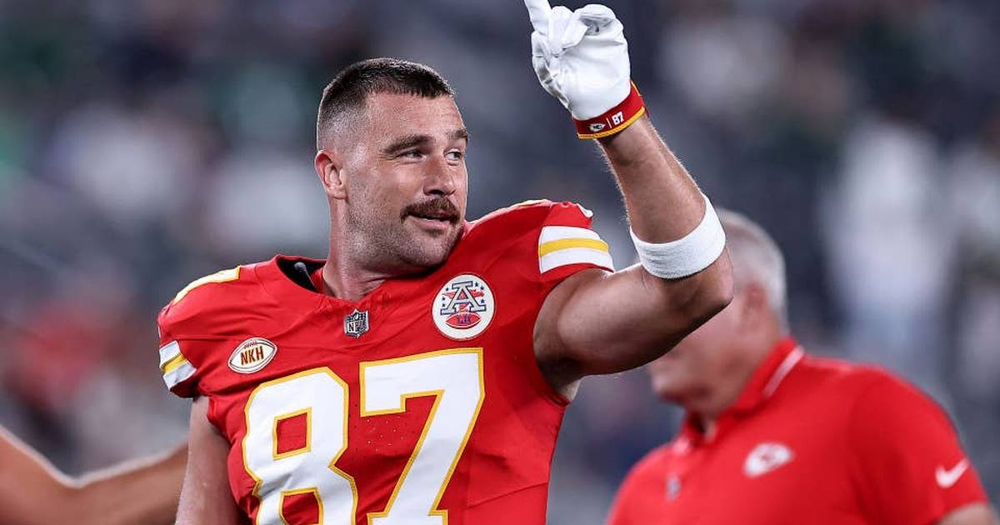

Travis Kelce Over 46.5 Receiving Yards: The Broncos Have Never Solved Him
Kelce has gone for 58+ yards in five of his last six games against Denver, and he is Mahomes' most reliable target left. Take the over 46.5 at -114.

The game slip
Matchup: Kansas City Chiefs (5-1) at Denver Broncos (5-2), Empower Field at Mile High, Sunday at 4:25 PM ET on CBS.
Line: Kansas City -1.5 | Total 41.5 | Moneyline: Chiefs -115, Broncos -105 (via ESPN scoreboard, DraftKings).
Kansas City injury report: The Chiefs' out list includes Tyquan Thornton, Mansoor Delane, Omarr Norman-Lott, Brashard Smith, L'Jarius Sneed, and Ethan Downs. Travis Kelce is not on it.
Denver injury report: Cornerback Pat Surtain II is healthy — Denver's best defensive player, back for this one.
Storylines driving the bet:
1. First place in the AFC West is on the line, and Kansas City's offense runs through its tight end in big games.
2. Mahomes is coming off a rough Week 7 in Seattle (165 yards, zero touchdowns), but in five career meetings against Nix he has averaged 264 passing yards per game with 23 touchdowns — and Kelce has been the constant in those games.
3. Denver's defense is good, but its attention goes to stopping the Chiefs' receivers first. Kelce lives in the middle of the field, on third down, where games like this are decided.
The bet
Travis Kelce Over 46.5 receiving yards (-114, via Action Network). This is the props-led approach, and Kelce is the cleanest version of it on this slate. He has recorded 58+ receiving yards in five of his last six games against the Broncos, per Action Network, and he is averaging 57.2 receiving yards per game in 2026. His career line against Denver across 23 games stands at 75 receiving yards per game. He is Mahomes' primary third-down weapon, with 21 charted third-down targets this season.
The number is the point. At 46.5, Kelce does not need a monster game. He needs his normal game against the team he has owned for a decade. Four catches for 50 yards gets there. A third-down conversion here, a red-zone look there, and the ticket is home before the fourth quarter.
The honest caveat: this is a 41.5-total game at altitude against a good defense with Surtain healthy, and if Kansas City's run game gets going, Kelce's volume could dip. Rashee Rice returning for this rivalry game could also eat a target or two. And lines move — Action Network's 46.5 is the number I am playing, but confirm the exact line and price in your book before you play it, because another outlet had this as low as 43.5 earlier in the week. If your book is dealing 43.5, that is an even better version of the same bet. If it has moved to 49.5 or worse, the edge thins out and I would pass.
If gambling stops being fun, call 1-800-GAMBLER.
Sources: Action Network — NFL player props Week 8, OddsIndex — Chiefs vs. Broncos game preview, ESPN NFL scoreboard, Week 8 (DraftKings odds)